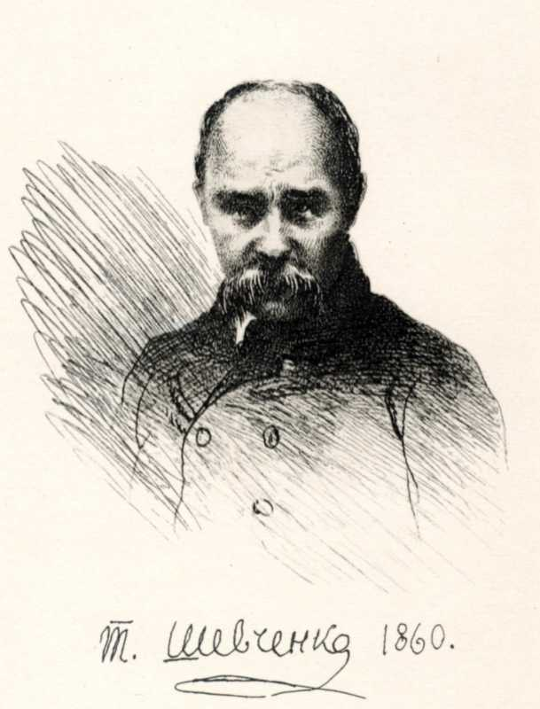

Тарас Григорович Шевченко
ГОСПОДЬ БОГ ЛИХИХ КАРАЄ
1
А в законі господньому Серце його й воля Навчається; і стане він — Як на добрім полі Над водою посаджене Древо зеленіє, Плодом вкрите.
Так і муж той В добрі своїм спіє. А лукавих, нечестивих І слід пропадає, — Як той попіл, над землею Вітер розмахає,
І не встануть з праведними Злії з домовини. Діла добрих обновляться, Діла злих загинуть.
12
- Чи ти мене, боже милий, Навік забуваєш, Одвертаєш лице своє, Мене покидаєш?
- Мене покидаєш? Доки буду мучить душу І серцем боліти? Доки буде ворог лютий
- На мене дивитись І сміятись! Спаси мене, Спаси мою душу, Да не скаже хитрий ворог: «Я його подужав».
- І всі злії посміються, Як упаду в руки, В руки вражі. Спаси мене Од лютої муки,
- Спаси мене,— помолюся І воспою знову Твої блага чистим серцем, Псалмом тихим, новим.
43
Боже, нашими ушима Чули твою славу, І діди нам розказують Про давні кроваві Тії літа; як рукою Твердою своєю Розв'язав ти наші руки І покрив землею Трупи ворогів. І силу Твою восхвалили Твої люде, і в покої, В добрі одпочили, Славя господа!.. А нині Покрив єси знову Срамотою свої люде, І вороги нові Розкрадають, як овець, нас І жеруть! Без плати І без ціни оддав єси Ворогам проклятим; Покинув нас на сміх людям, В наругу сусідам, Покинув нас, яко в притчу Нерозумним людям. І кивають, сміючися, На нас головами; І всякий день перед нами — Стид наш перед нами. Окрадені, замучені, В путах умираєм, Чужим богам не молимось, А тебе благаєм: «Поможи нам, ізбави нас Вражої наруги. Поборов ти першу силу, Побори ж і другу, Ще лютішу!.. Встань же, боже, Вскую' будеш спати, Од сліз наших одвертатись, Скорби забувати! Смирилася душа наша, Жить тяжко в оковах! Встань же, боже, оможи нам Встать на ката знову».
52
- Пребезумний в серці скаже, Що бога немає, В беззаконії мерзіє, Не творить благая.
- А бог дивиться, чи є ще Взискающий бога? Нема добро творящого, Нема ні одного!
- Коли вони, неситії, Гріхами дознають? Їдять люде замість хліба, Бога не згадають,
- Там бояться, лякаються, Де страху й не буде. Так самі себе бояться Лукавії люде.
- Хто ж пошле нам спасеніє, Верне добру долю? Колись бог нам верне волю, Розіб'є неволю.
- Восхвалимо тебе, боже, Хваленієм всяким; Возрадується Ізраїль І святий Іаков
53
- Боже, спаси, суди мене Ти по своїй волі.
-
Молюсь: господи, внуши їм Уст моїх глаголи,
- Бо на душу мою встали Сильнії чужії,
- Не зрять бога над собою, Не знають, що діють.
- А бог мені помагає, Мене заступає
- І їм правдою своєю Вертає їх злая.
- Помолюся господеві Серцем одиноким
- І на злих моїх погляну Незлим моїм оком.